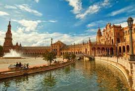
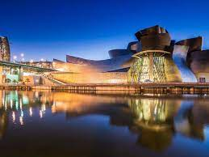
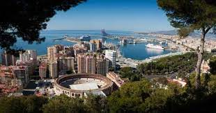
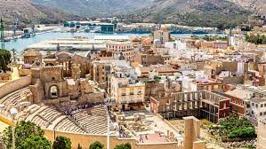
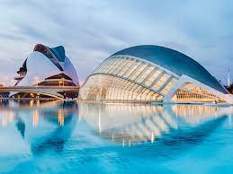
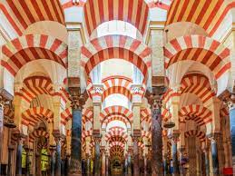

Sevilla
Es un municipio y una ciudad de España, capital de la provincia homónima y de Andalucía. Contaba con 691 395 habitantes en 2020.
| Sevilla | Bilbao | Madrid | Barcelona |
|  |  |  |
|
| Malaga | Murcia | Valencia | Córdoba |
|  |  |  |  |
Es un municipio y una ciudad de España, capital de la provincia homónima y de Andalucía. Contaba con 691 395 habitantes en 2020.
Es un municipio situado en el norte de España y una villa de dicho municipio, capital de la provincia y territorio histórico de Vizcaya, en la comunidad autónoma del País Vasco.
Es un municipio y una ciudad de España, con categoría histórica de villa. Constituye la capital del Estado y de la Comunidad de Madrid. En su término municipal, el más poblado de España, viven 3 334 730 personas empadronadas.
Es una ciudad española, capital de la comunidad autónoma de Cataluña, de la provincia homónima y de la comarca del Barcelonés.
Es una ciudad y municipio de España, capital de la provincia homónima y ubicada en Andalucía, al sur del país. Con una población de 578 460 habitantes a 1 de enero de 2020, es la segunda ciudad más poblada de Andalucía y la sexta de España, así como la mayor de entre las que no son capitales autonómicas.
Es una ciudad española, capital del municipio del mismo nombre y de la Región de Murcia. Es el centro de la comarca de la Huerta de Murcia y de su área metropolitana. Está situada en el sureste de la península ibérica, a orillas del río Segura, en la denominada depresión prelitoral murciana, a 40 kilómetros del mar Mediterráneo.
Es un municipio y una ciudad de España, capital de la provincia homónima y de la Comunidad Valenciana. Con una población de 801 545 habitantes.
Es una ciudad y municipio español en Andalucía, capital de la provincia homónima, situada en una depresión a orillas del Guadalquivir y al pie de Sierra Morena.